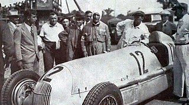

1934 Grand Prix
The 1934 Grand Prix season saw the advent of the new 750 kg Formula. In an
effort to curb the danger
of
rising speeds, the AIACR imposed this upper weight limit that effectively outlawed the large
capacity engines.
The incumbent manufacturers Alfa Romeo, Maserati and Bugatti had been preparing their new models
with
varying
success, the best of which was the Alfa Romeo Tipo B.
However, it was the state-sponsored
arrival of the
two German teams, Mercedes-Benz and Auto Union, and their innovative and progressive cars that
ignited a
new, exciting era of motor racing.
Source: Wikipedia